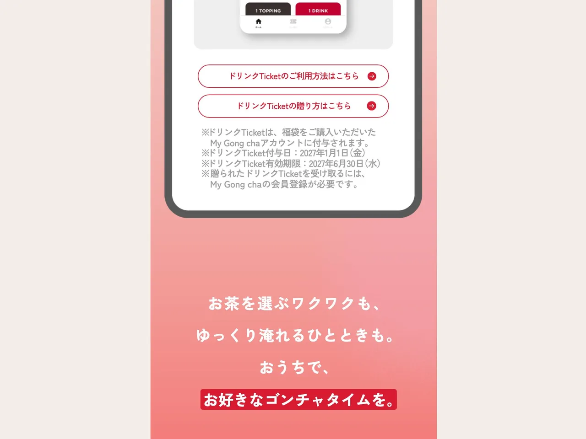

ゴンチャ福袋2027は、2026年11月22日時点で公式サイトに完売と表示されています。税込・送料込み7,500円のオンライン限定セットでした。購入済みの商品は2027年1月1日から順次配送予定です。同日にデジタルドリンクチケット6枚が購入時の会員アカウントに付与されます。

01オンライン販売は完売、購入済みの方が確認すること
公式が設定した一般販売期間は2026年11月13日12時から11月26日23時59分まででした。先着順の数量限定販売で、公式ページには期間途中の11月22日時点で完売の表示が出ています。
販売時にはゴンチャの会員プログラム「My Gong cha」への入会が必要で、ゴンチャ公式LINEからオンラインストアへ進む方式でした。支払い方法はクレジットカードとPayPay。先行販売と一般販売を合わせた購入上限は1人3個でした。注文が完了すると、LINEの「LINE ミニアプリ お知らせ」に通知が届きます。
02お届けとデジタルチケットの付与
| 確認項目 | 公式の案内 |
|---|---|
| 福袋の届け先 | 注文時に入力した住所 |
| 配送開始 | 2027年1月1日から順次予定。出荷時にメールで通知 |
| ドリンクチケット付与 | 2027年1月1日、購入に使ったMy Gong chaアカウント |
| チケットの有効期限 | 2027年6月30日 |
福袋の出荷通知はメール、ドリンクチケットはMy Gong chaで確認します。 福袋の箱が届く日と、デジタルチケットの付与日はそれぞれ案内されています。商品の配送は順次です。
ドリンクチケットは1枚で好きなドリンク1杯に使え、トッピングは最大3つまで付けられます。有人レジ、モバイルオーダー、セルフレジで利用できます。友人や家族に贈ることもでき、受け取る方にはMy Gong chaへの会員登録が必要です。贈り方と利用方法は公式特設ページの案内を確認してください。

03福袋の中身はお茶2種と茶こし付きマグなど
| 品目 | セット内容 |
|---|---|
| 景徳鎮産 茶こし付きマグカップ | 磁器製、容量200ml、1個 |
| TEACRAFT ティーバッグアソート | 福袋限定フレーバーを含む計5包 |
| 阿里山ウーロンティー | 茶葉20g |
| オリジナルトートバッグ | 仕切り・内ポケット・開口部のボタン付き、1個 |
| ゴンチャム めじるしチャーム | 全5種からランダムで1個 |
| My Gong cha デジタルドリンクTicket | 6枚 |
お茶はティーバッグと茶葉の2タイプです。 ティーバッグを淹れるときのおすすめの温度や抽出時間は個包装に書かれています。阿里山ウーロンティーは、セットのマグカップに付いた茶こしで淹れられます。
トートバッグはA4サイズが入り、仕切りと内ポケットが付いています。チャームはゴンチャのキャラクター「ゴンチャム」をかたどったもので、種類は届いてから確認できます。
04よくある質問
ゴンチャ福袋2027は今から買えますか？
2026年11月22日時点で、公式特設ページは完売と案内しています。
福袋の注文完了と出荷はどこで確認できますか？
注文完了はLINEの「LINE ミニアプリ お知らせ」で確認します。出荷時はメールで案内されます。
ドリンクチケットは友人に贈れますか？
贈ることができます。贈られたチケットを受け取るには、相手もMy Gong chaの会員登録が必要です。
05まとめ
結論福袋は公式で完売しています。購入済みの商品は2027年1月1日から順次配送予定です。
- 福袋は購入時に入力した住所に届きます。出荷時の案内はメールです。
- 1月1日に付与されるチケットは、購入に使ったMy Gong chaアカウントで確認します。有効期限は6月30日です。
- ほかの食品系企画はゴディバ福袋2027の案内も参照できます。